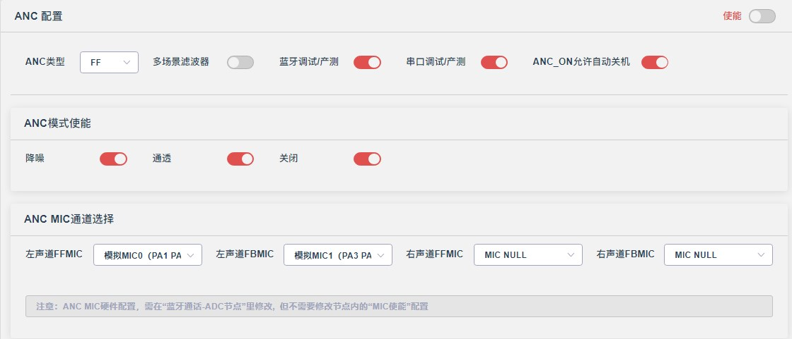
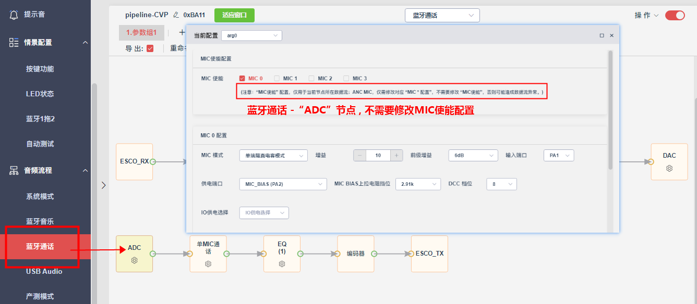
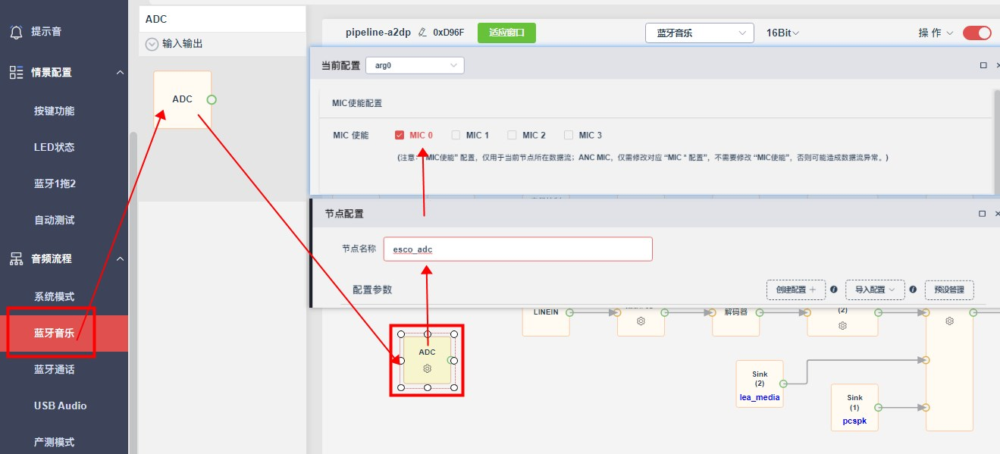
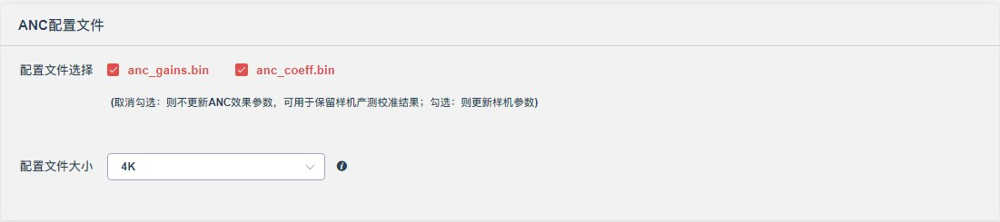

12.4.1. ANC使用配置
12.4.1.1. ANC基本介绍
ANC（Active Noise Cancellation）主动降噪，使用耳机内的麦克风采集环境的中低频噪声，经过算法实时运算，并喇叭发射出与噪声相位相反、振幅相同（理想情况）的声波来抵消噪声；
12.4.1.2. ANC配置说明

12.4.1.2.1. 基本配置
ANC类型：单麦类型（FF/FB），双麦类型（HYBIRD）；ANC降噪效果 HYBIRD = FF + FB；
多场景滤波器: 点击跳转到《多场景滤波器说明》
蓝牙调试/产测：支持ANC_DESIGNER，第三方设备
蓝牙SPP调试/产测；串口调试/产测：支持ANC_DESIGNER，第三方设备
产测串口板调试/产测，支持JL自研产测;ANC_ON允许自动关机：支持ANC_ON模式下蓝牙无连接一段时间（跟随板级配置）自动关机。
12.4.1.2.2. ANC模式使能
降噪、通透、关闭：分别为对应ANC 3个模式，可根据实际开启对应模式。
12.4.1.2.3. ANC MIC通道选择
12.4.1.2.3.1. 配置说明
左声道FFMIC、左声道FBMIC、右声道FFMIC、右声道FBMIC：
ANC MIC的通道配置，可根据原理图配合ADC节点的ADC IO通道选择对应的ANC MIC;
TWS一般仅需配置 左声道FFMIC、左声道FBMIC；头戴式/挂脖耳机需配置左/右声道，多余的MIC配置选择MIC; NULL
12.4.1.2.3.2. 注意事项
蓝牙通话有
ADC节点ANC MIC硬件配置，需在
蓝牙通话-ADC节点里修改，但不需要修改节点内的MIC使能配置; 
蓝牙通话没有
ADC节点， 比如使用IIS MIC/PDM MIC，则需以下步骤（临时处理方法）：在其他流程，比如
蓝牙音乐，添加ADC节点，将节点名字修改为esco_adc；
勾选
MIC使能-MIC0,在此ADC节点下配置ANC MIC的硬件配置。 
12.4.1.2.4. 基础API定义
/* ANC 模式定义 */
typedef enum {
ANC_OFF = 1, /*关闭模式*/
ANC_ON = 2, /*降噪模式*/
ANC_TRANSPARENCY = 3, /*通透模式*/
} ANC_mode_t;
/* ANC模式切换(下一个模式) */
void anc_mode_next(void);
/*
ANC模式切换(切换到指定模式)，并配置是否播放提示音
param: mode 指定模式ANC_mode_t
tone_play 0： 不播放提示音；1： 播放提示音
*/
void anc_mode_switch(u8 mode, u8 tone_play);
/*
ANC状态获取
return 0: idle(初始化/OFF); 1: busy(ANC/通透/训练)
*/
u8 anc_status_get(void);
/*
获取当前ANC模式
return ANC_mode_t
*/
u8 anc_mode_get(void);
/*
ANC切模式繁忙标志
return 0：空闲； 1：切模式中
*/
u8 anc_mode_switch_lock_get(void);
12.4.1.3. ANC配置文件

12.4.1.3.1. 文件说明
anc_gains.bin: 存放增益/采样率等其他ANC硬件配置（多场景滤波器，不存放Total gain）；
anc_coeff.bin: 存放降噪/通透滤波器（多场景滤波器，存放 Total gain）。
12.4.1.3.2. 配置说明
配置文件选择
anc_gains.bin/anc_coeff.bin:(取消勾选:则不更新ANC效果参数，可用于保留样机产测校准结果;勾选:则更新样机参数)。
配置文件大小
可选
4K/8K, 分配空间应大于(anc coeff.bin+anc gains.bin)的大小；文件空间超过8K，需选择
自定义，在isd_config_rule.c配置（具体可咨询原厂）。
12.4.1.4. 多场景滤波器
12.4.1.4.1. 需求简介
简介：支持多组ANC/通透滤波器的使用，应用上可针对某些场景做特殊效果调试，如飞机/地铁等；（调试前，声学工程师需要 沟通每个场景ID对应的产品需求）
优势：针对不同环境定制化处理
关键词：（操作）手动，（输出）调滤波器。
12.4.1.4.2. 软件配置
//文件路径：audio_anc.h
#define ANC_MULT_ORDER_CMP_ONLY_USE_ID1 1 /*ANC多滤波器-CMP音乐补偿仅使用场景ID1的参数*/
#define ANC_MULT_ORDER_TRANS_ONLY_USE_ID1 0 /*ANC多滤波器-通透模式仅使用场景ID1的参数*/
#define ANC_MULT_ORDER_NORMAL_ID 1 /*ANC多滤波器-开机默认场景ID*/
//ANC多滤波器-耳道自适应ID匹配，选择0则跟随当前场景
#define ANC_MULT_ADPTIVE_TRAIN_USE_ID 1 /*耳道自适应-训练使用的场景ID*/
#define ANC_MULT_ADPTIVE_MATCH_USE_ID 1 /*耳道自适应-匹配使用的场景ID*/
ANC_MULT_ORDER_ENABLE：ANC多场景滤波器使能配置（不兼容单场景anc_coeff.bin配置文件和产测流程）；
ANC_MULT_ORDER_CMP_ONLY_USE_ID1：ANC多滤波器下，CMP音乐补偿固定复用场景ID 1的参数，（方便用户调试/产测时只测场景ID 1的CMP，节约产测时间）；
ANC_MULT_ORDER_TRANS_ONLY_USE_ID1：ANC多滤波器下，通透滤波器固定复用场景ID 1的参数，（方便用户调试/产测时只测场景ID 1的通透滤波器，节约产测时间）；
ANC_MULT_ORDER_NORMAL_ID：默认场景ID标定，用于标定最稳定/通用的场景滤波器，默认为ID 1,用于ANC耳道自适应匹配。（即开启ANC耳道自适应时，会切换到改默认场景）。
12.4.1.4.3. API 定义
/*
多滤波器-场景参数切换
param: scene 场景ID
update_flag 非ANC_OFF时，即时更新效果: 0 不更新；1 更新
Note: ID 从1 开始
*/
void audio_anc_mult_scene_set(u16 scene_id);
/*多滤波器-获取当前场景的滤波器*/
u8 audio_anc_mult_scene_get(void);
/*多滤波器-最大场景个数获取*/
u8 audio_anc_mult_scene_max_get(void);
/*多滤波器-场景循环切换*/
void audio_anc_mult_scene_switch(u8 tone_flag);
/*
ANC结构设置, 下一次切模式或复位ANC时生效
param: enablebit ANC结构配置，如(ANC_FF_EN/ANC_FB_EN/ANC_HYBRID_EN)
update_flag 非ANC_OFF时，即时更新效果: 0 不更新；1 更新
*/
void audio_anc_enable_set(u8 enablebit);
/*
ANC所有参数复位更新，不支持平滑过渡
param: fade_en 1 启动淡入淡出，时间慢（<150ms）；0 关闭淡入淡出，时间快，会有po声
*/
void audio_anc_param_reset(u8 fade_en);
12.4.1.4.4. 使用demo
//=======================demo=======================
/* 多滤波器-场景切换demo（立即更新效果，会有延时） */
void audio_anc_mult_scene_set_demo(u16 scene_id)
{
audio_anc_mult_scene_set(scene_id); //设置对应场景参数
audio_anc_param_reset(1); //更新ANC效果
}
/*
以下案例的应用为，有3个场景
场景1: HYBRID
场景2：FF
场景3：FB
*/
/*方式一：在线更新场景效果*/
/* 切场景1 */
audio_anc_enable_set(ANC_HYBIRD_EN，0); //设置为HYBRID
audio_anc_mult_scene_set(1); //切换场景1的参数
audio_anc_param_reset(1); //淡入淡出的方式 更新ANC效果
/* 切场景2 */
audio_anc_enable_set(ANC_FF_EN，0); //设置为FF
audio_anc_mult_scene_set(2); //切换场景2的参数
audio_anc_param_reset(1); //淡入淡出的方式 更新ANC效果
/* 切场景3 */
audio_anc_enable_set(ANC_FB_EN，0); //设置为FB
audio_anc_mult_scene_set(3); //切换场景3的参数
audio_anc_param_reset(1); //淡入淡出的方式 更新ANC效果
/*方式二：模式切换前更新场景*/
/* 通透模式切换场景1*/
audio_anc_mult_scene_set(1); //切换场景1
anc_mode_switch(ANC_ON, 1); //切换到ANC模式
12.4.1.4.5. 注意事项
默认场景 ID = 1 为最深降噪；
一个场景包含通透模式和降噪模式，即包括FF/FB/通透/CMP滤波器。（通透/CMP滤波器可使用宏控制，是否固定使用场景1）；
单/多场景滤波器模式-兼容性差异：
ANC配置文件不兼容：anc_coeff.bin anc_gains.bin 不兼容，需通过ANC_DESIGNER 重新导出；
产测不兼容：多场景滤波器产测流程独立，如果使用第三方产测设备，要询问设备厂商是否支持，需使用对应序列/流程（兆华/美格信/指南目前已支持）。
12.4.1.4.6. CPU差异
特性 |
700N |
701N |
708N |
|---|---|---|---|
多场景滤波器 |
× |
√ |
√ |
平滑切换滤波器 |
× |
× |
√ |